FIELD SERVICE CASE
控制箱溫控器更換
2026 年 8 月 5 日現場作業紀錄｜雙區電熱控制面板與溫控器更換。
作業內容
本次為外出現場的溫控器更換作業。依提供的照片可見控制面板分為「前段電熱」與「後段電熱」兩區，面板上使用 FOTEK MT-72 溫度控制器；照片同時記錄控制箱內部、溫控器背面端子與配線，以及面板通電顯示狀態。
工作類型溫控器更換
設備區域雙區電熱控制箱
照片可辨識元件FOTEK MT-72
現場照片14 張
實績紀錄原則
本頁只呈現使用者提供的實際作業照片與已確認工作內容；不公開客戶名稱與廠區位置，也不自行推測原故障原因、設備產能或未確認的電氣規格。
CONTROL PANEL
控制面板與顯示
記錄前段／後段電熱控制區與溫控器顯示狀態。

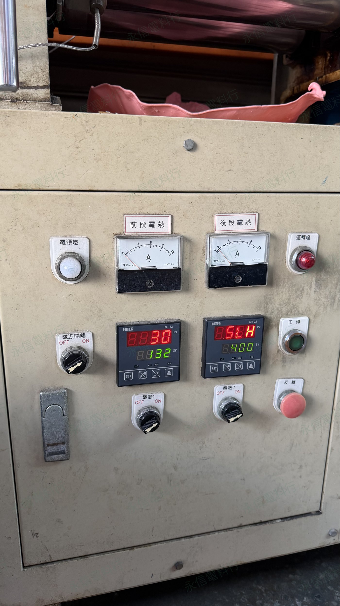
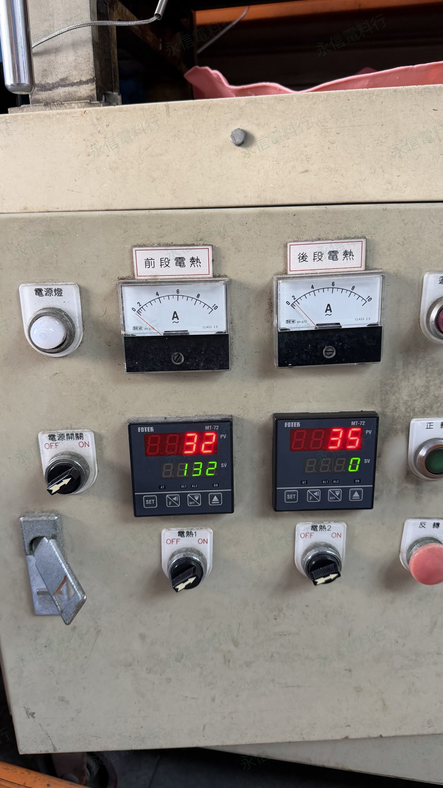
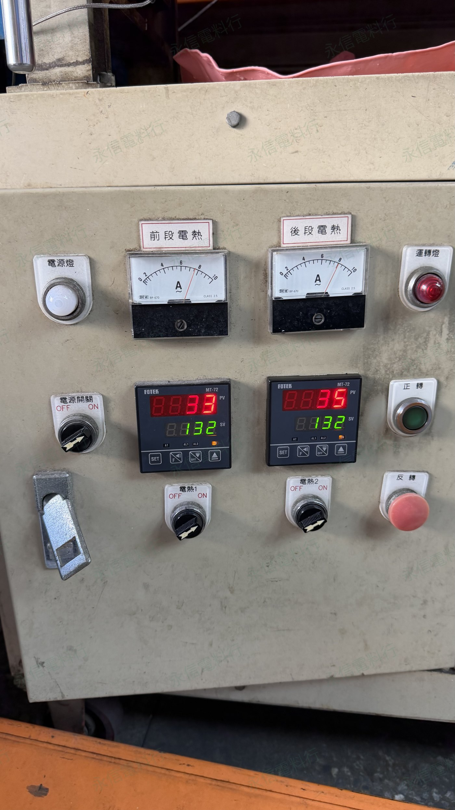
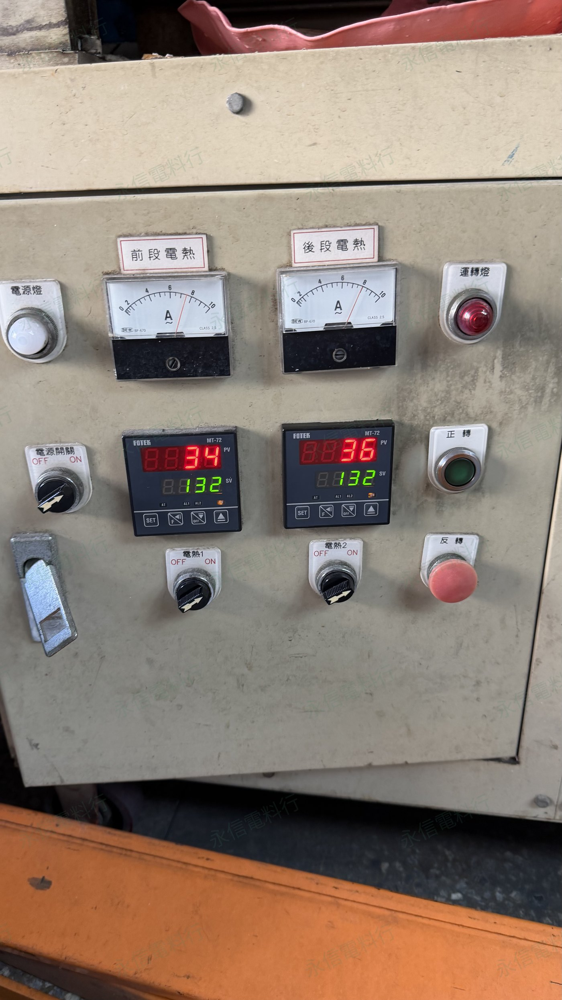
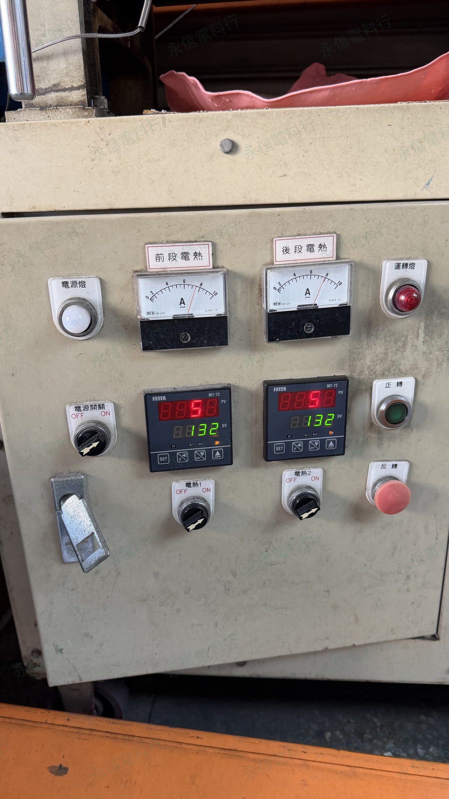
INSIDE THE PANEL
控制箱內部與端子配線
記錄溫控器背面、端子、線路配置與控制箱內部現場狀態。
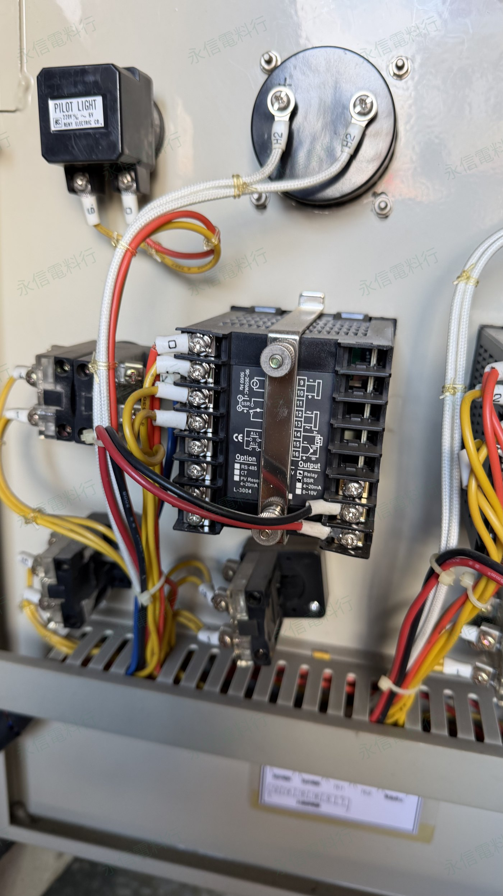
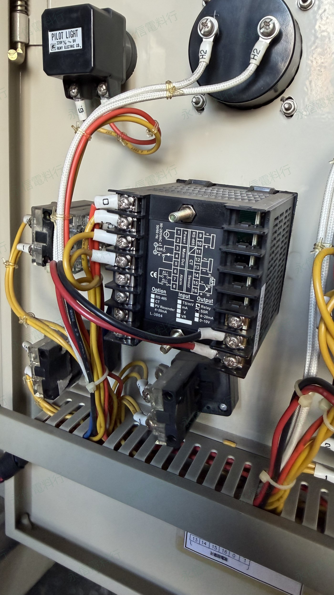
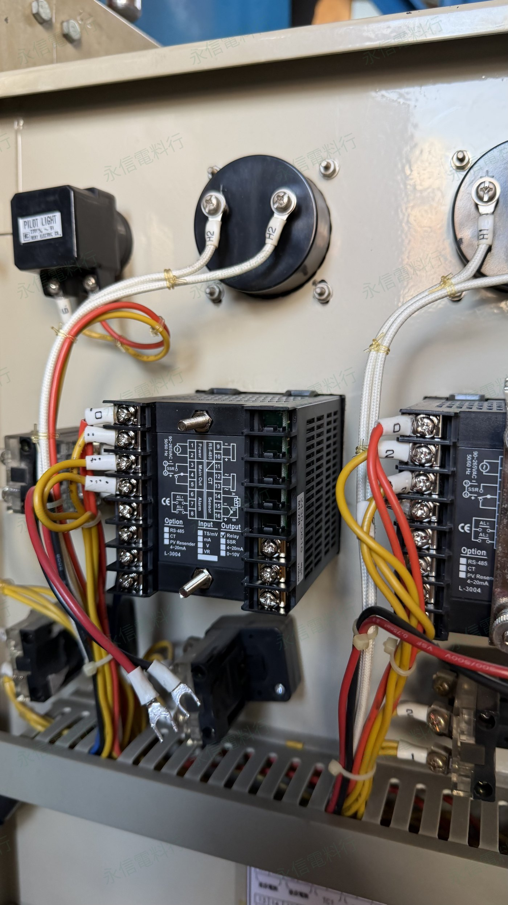
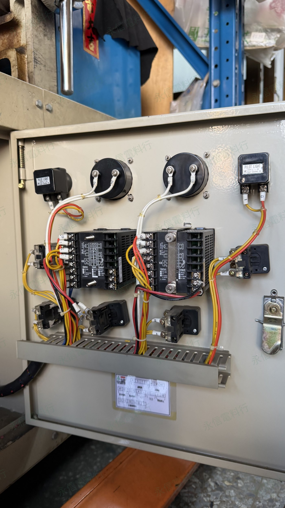
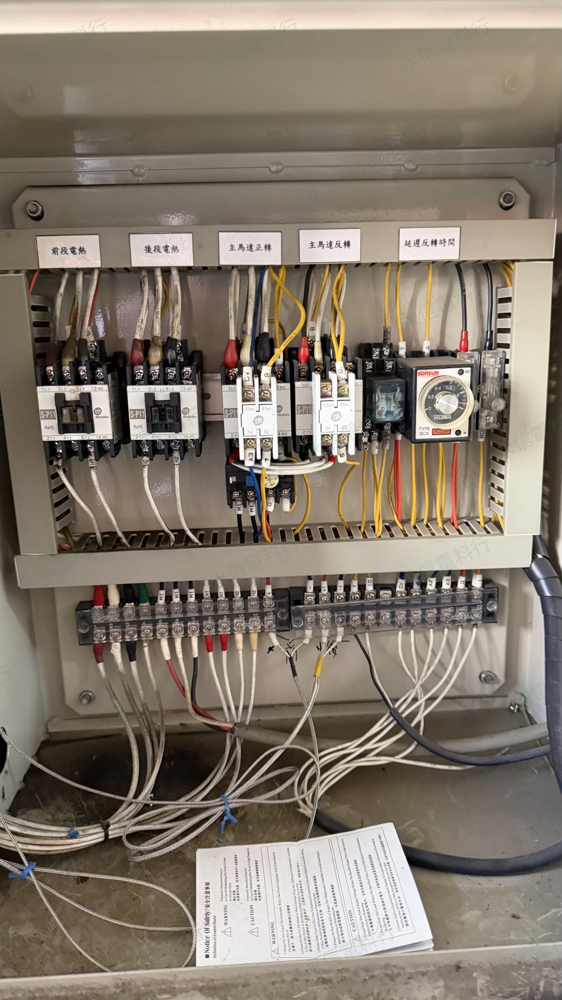
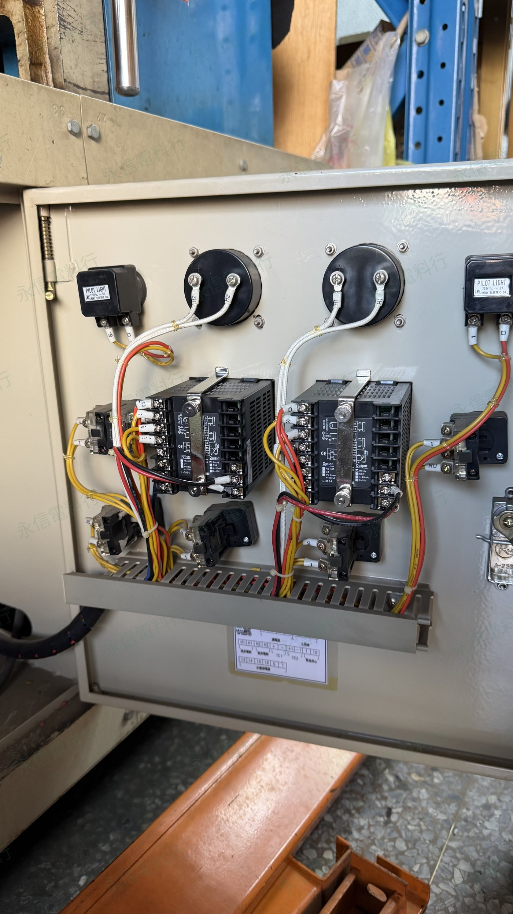
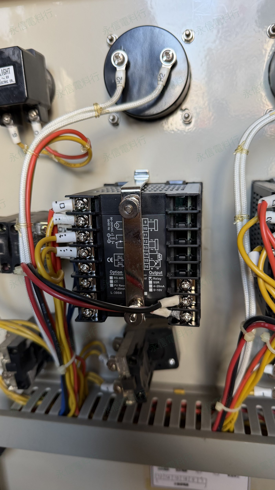
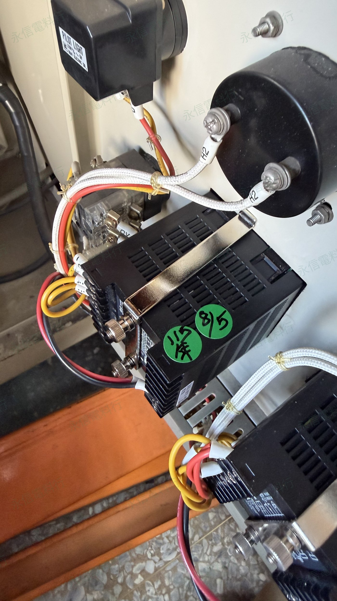
MORE SERVICE CASES
返回服務實績
後續現場維修與元件更換紀錄會持續依日期整理上架。